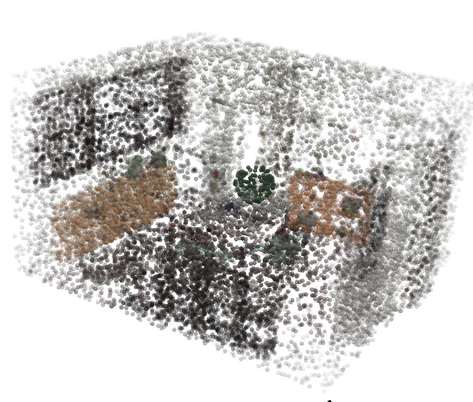
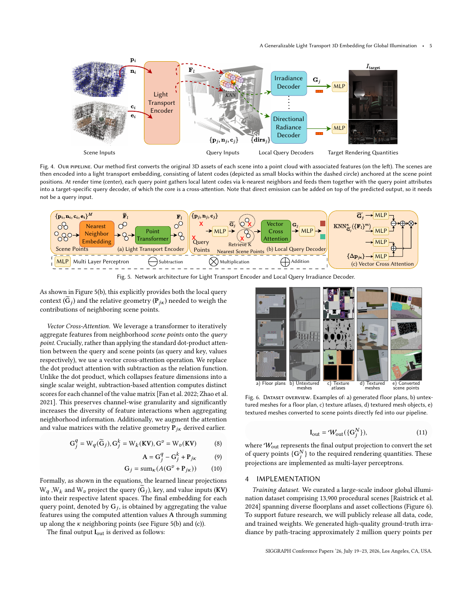
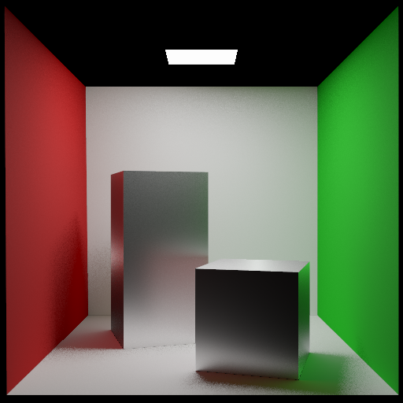

一句话理解
先把多次反弹的全局关系“烘焙”到场景点 embedding，再让每条渲染 query 只读取附近的 32 个 latent。
这改变了渲染的拆分方式：场景复杂度主要影响一次性的 encoder，图像分辨率主要影响独立的 query decoding。
三段式路径
p · n · albedo · emissive
Encoder
Decoder
NNE + PTV3 让远距离光照关系进入点锚定 embedding。
点云不是可视化，而是模型接口

每个 scene point 记录位置、法线、albedo、emissivity。它不需要 mesh connectivity，也不绑定固定 camera。
采样密度可以独立调整，发光几何和普通几何共享同一个 representation。训练 query 来自世界空间表面点，推理 query 来自当前 ray intersection。
方法拆解
1 · NNE
先用 FPS 选中心，再聚合每个中心的 KNN 原始点和相对位置，最终约保留 M/4 个更宽空间覆盖的 token。
2 · PTV3
将 token 按 space-filling curve 序列化，切成 1024 点 patch，在层间换序以传递跨 patch 信息。
3 · Vector cross-attention
query 只检索 K=32 个 scene embedding，用逐通道 subtraction 加 relative geometry 做聚合。
复杂度与职责
| 路径 | 本文 | RenderFormer 对照 | 解释 |
|---|---|---|---|
| Encoder | O(CM) | O(M²) | 全局关系只在 scene update 计算 |
| Decoder | O(KN), K=32 | O(MN+N²) | 每个 query 独立读取邻域 |
| 监督 | 3D query points | 2D images | 本文得到 view/resolution independence |
| 参数量 | 42M | 205M / 483M | 论文结构对照表 |
输出任务可以切换
主实验使用 diffuse irradiance；损失在 log space 上计算。

主表结果
Path Tracing 64 spp 是质量参考，不是普通学习 baseline；Deep Shading 的数字来自将测试视图放回训练后的 overfitting。
计算成本
20k 是论文默认点数；更多点提升覆盖，但显存和 KNN 成本也会上升。
| Encoder | 208 ms / scene update |
|---|---|
| 512×512 decoder | 368 ms / image |
| GPU KNN | 约 25–36 ms |
从 diffuse 到 glossy 的迁移

保留预训练 encoder，只替换 Directional Radiance Decoder，并增加 roughness 与方向输入。
每个 query 预测 1024 个半球方向（32×32），每个方向用 64 条 path-traced samples 得到 target。这证明 representation 可以迁移，但论文仍将它定位为 preliminary versatility result。
论文证明了什么
- 复杂室内场景可以用 point-based 3D embedding 跨场景学习 GI。
- 线性 encoder + 固定邻域 decoder 能降低 global attention 的内存瓶颈。
- world-space supervision 支持视角和分辨率变化。
- 同一 encoder 能有限迁移到 glossy directional radiance。
论文没有证明什么
- 当前系统已达到实时渲染。
- 高频 specular、caustics、透明材质或 participating media 已被解决。
- 动态场景可以无代价地局部更新 embedding。
- 数据先验能替代生产级 path tracing 的物理保证。
快速自测
为什么不把 20k 点直接做 global attention？
20k 点会带来二次 attention 显存；NNE 先聚合空间邻域，PTV3 再用 patch attention 近似全局交互。
为什么 Local Query Decoder 不能只做平均池化？
邻居的重要性受距离、遮挡和相对几何影响；vector cross-attention 让每个 channel 学习不同的 relation。
这是不是实时 GI？
论文报告 encoder 208 ms、512×512 decoder 368 ms，并明确说尚未达到实时帧率。
当前最脆弱的失败模式是什么？
低频纹理色调、相邻房间光源和被遮挡点会产生色偏、光照退化或 latent leakage；动态序列还可能 flicker。
教学 demo 只实现结构骨架，不使用作者 checkpoint，也不生成论文级 GI 图像。